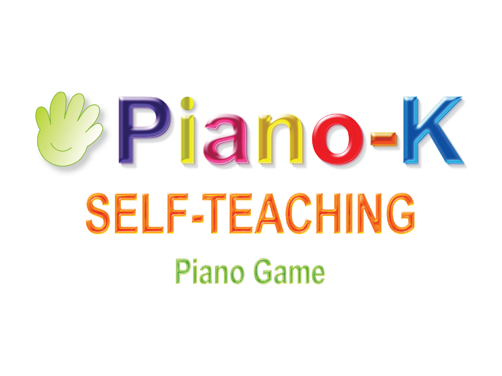
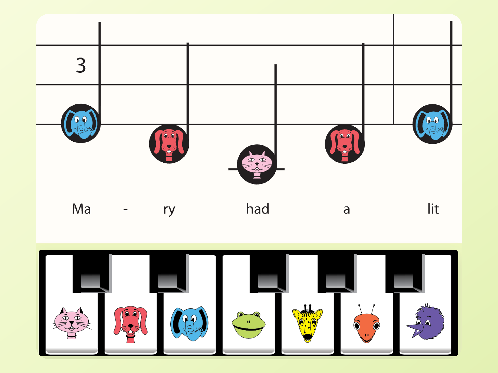
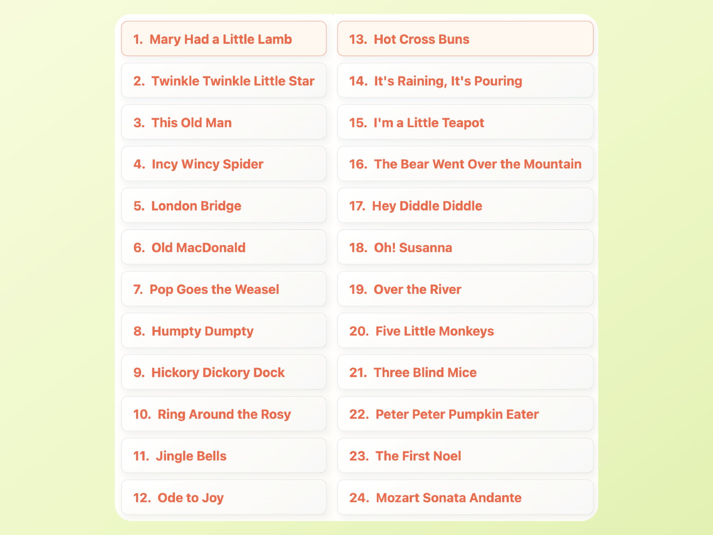
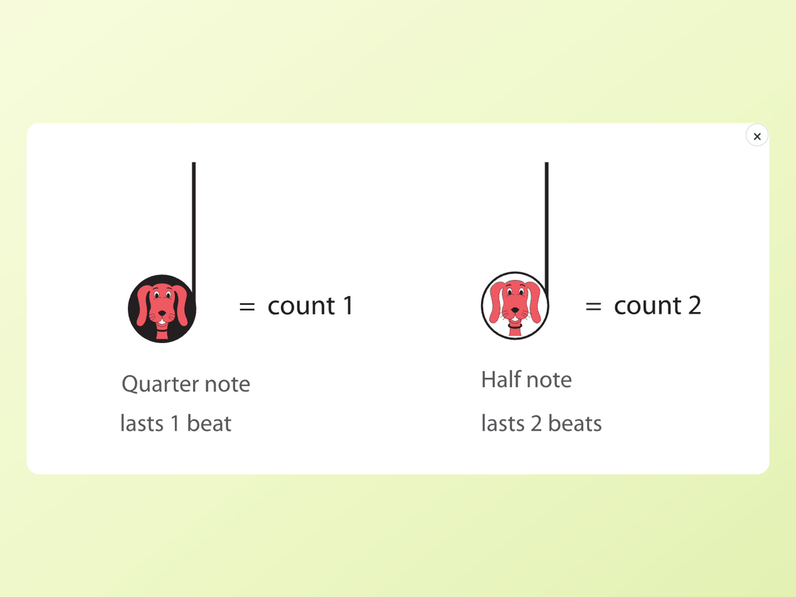
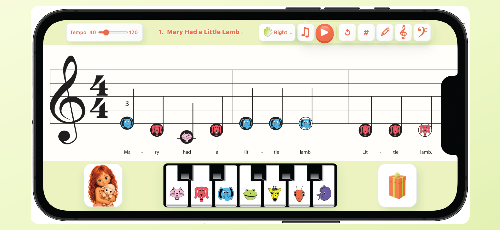

See, hear, and play
Colorful animal notes connect the score to a friendly on-screen piano keyboard.
A playful first step into music
Piano-K turns early piano practice into a colorful, easy-to-follow musical adventure for children and their grown-ups.
Designed for landscape use on supported devices.

Colorful animal notes connect the score to a friendly on-screen piano keyboard.
Clear visual guidance helps young learners explore songs at their own pace.
Large controls, familiar nursery songs, and simple instruction cards keep practice welcoming.
Inside Piano-K
Children can connect each note to a character, a piano key, and the sound they hear.



Made to feel at home
The interface adapts to supported screen sizes while preserving the same score, keyboard, controls, and cheerful Piano-K identity.

Piano-K